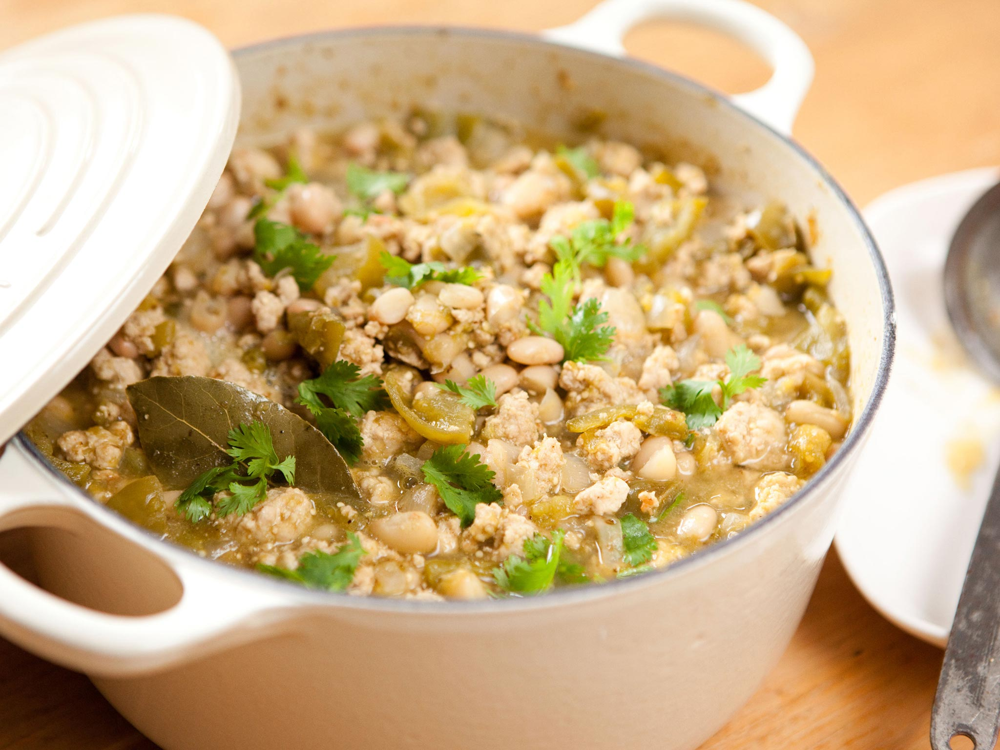

Home
Crockpot Turkey White Bean Pumpkin Chili

Description
This recipe is perfect for the fall. As the weather gets cooler and the color of the leaves change from green to gold, the food should also provide a comfy cozy vibe to match.
Ingredients
- 1/2 tbsp olive oil
- 1 LB ground turkey
- 1 small onion chopped
- 1 jalapeno minced
- 3 garlic cloves minced
- 1 1/2 tsp chili powder
- 2 Bay leaves
- 1 1/2 tsp cumin
- 1 tsp oregano
- 1/4 tsp cinnamon
- 1/2 tsp salt and pepper
- 1 - 15 oz can white great bean
- 1 - 15 oz can navy beans
- 1 - 15 oz can pumpkin puree
- 1 - 7 oz can green chiles
- 2 cups sodium chicken broth
- For Serving:cilantro, green onions, sour cream, tortilla chips. and rice.
Steps
- Heat olive oil and cook ground turkey then add to the crockpot.
- Saute onions and jalapeno, then garlic and add to crockpot.
- Add everything to the crockpot, cover, and cook on high for 4 hours or on low for 7-8 hours.
- Remove bay leaves and adjust seasoning to taste.